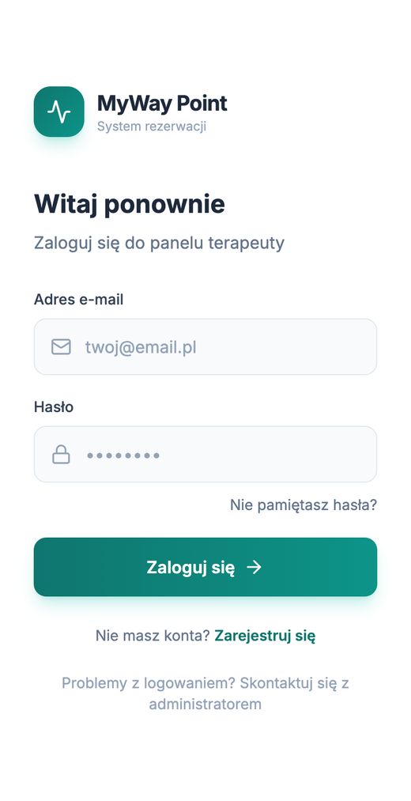
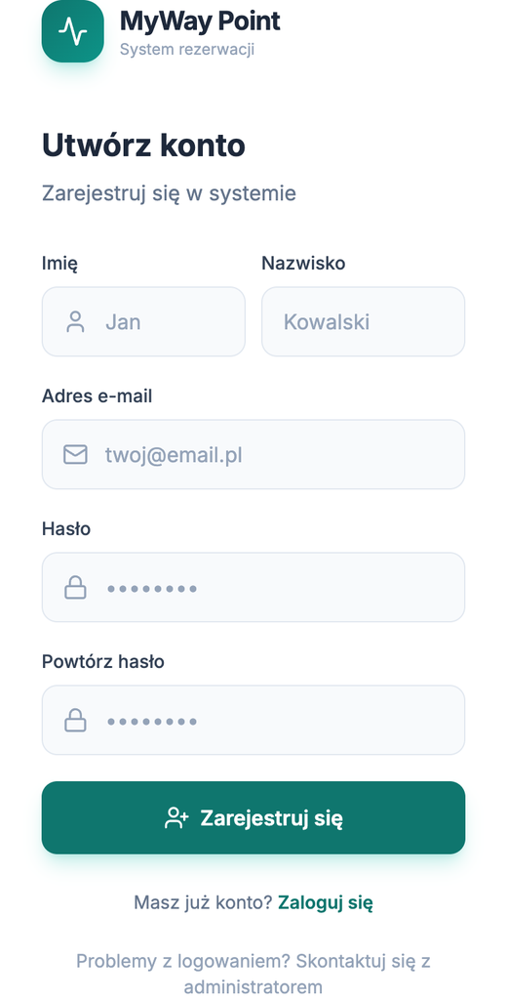
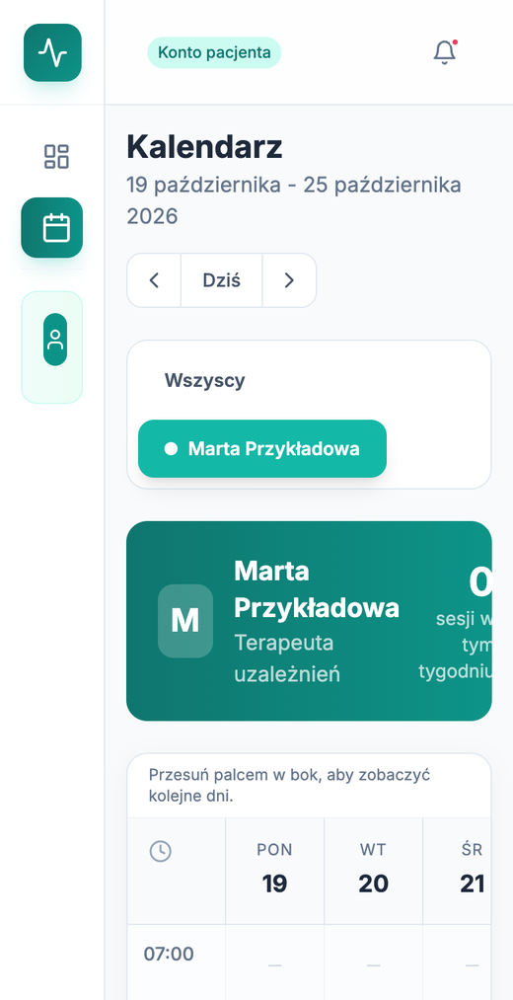
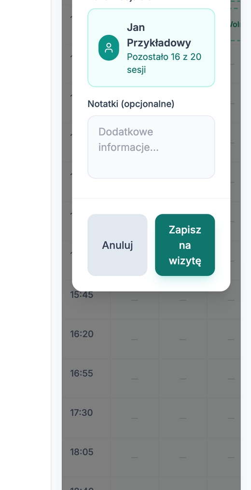
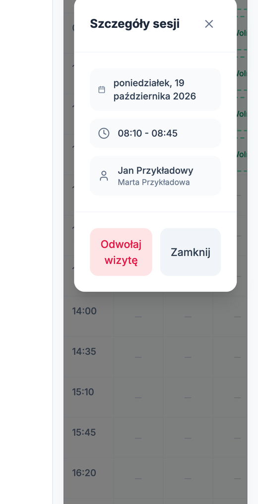

Instrukcja dla pacjentów Ośrodka MyWay. Logowanie, rezerwacja i odwołanie wizyty.
Nie ma maila z kodem? Zajrzyj do folderu Spam i odczekaj minutę.


Potrzebujesz terminu wcześniej niż za 3 dni? Zadzwoń: 731 395 295.

Termin wraca do puli i może go zająć inna osoba. Dostaniesz mail z potwierdzeniem odwołania.
Odwołaj wizytę, a potem zarezerwuj nową. Odwołana wizyta nie liczy się do limitu jednej wizyty w tygodniu.
Liczbę widzisz w oknie rezerwacji, na przykład „Pozostało 16 z 20 sesji”. Na komputerze jest też w menu po lewej stronie. Licznik zmienia się po odbytej wizycie.

